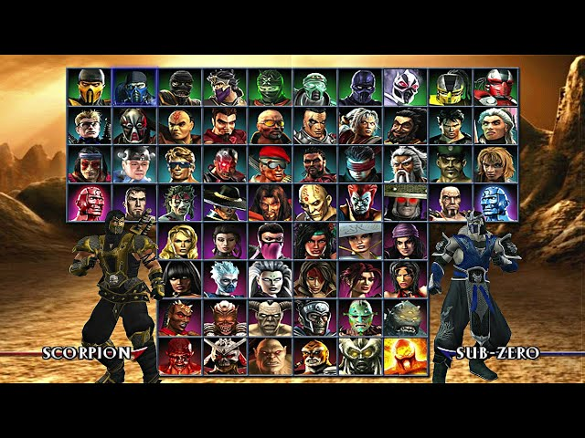
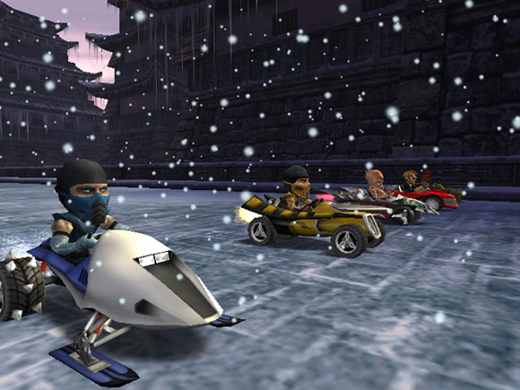
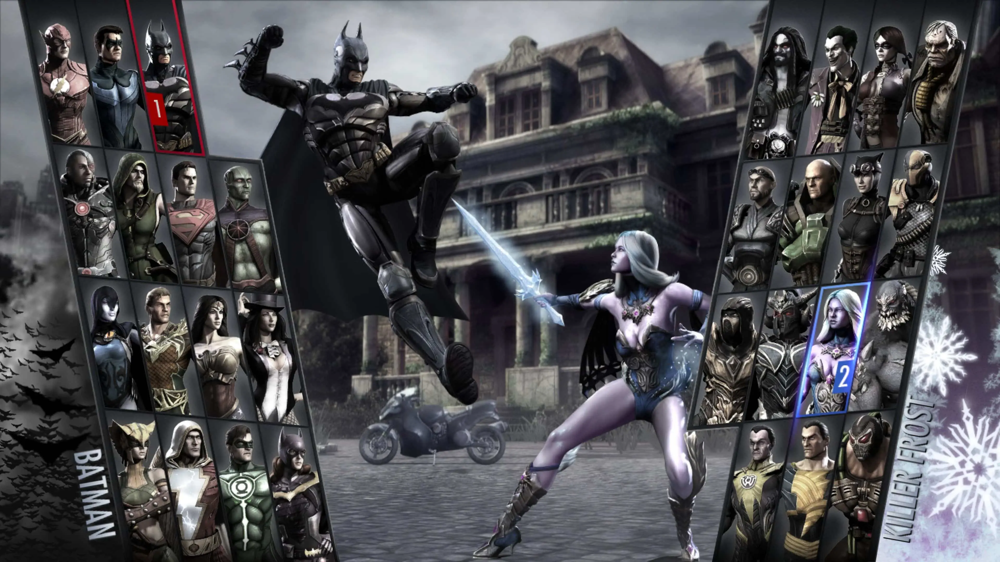
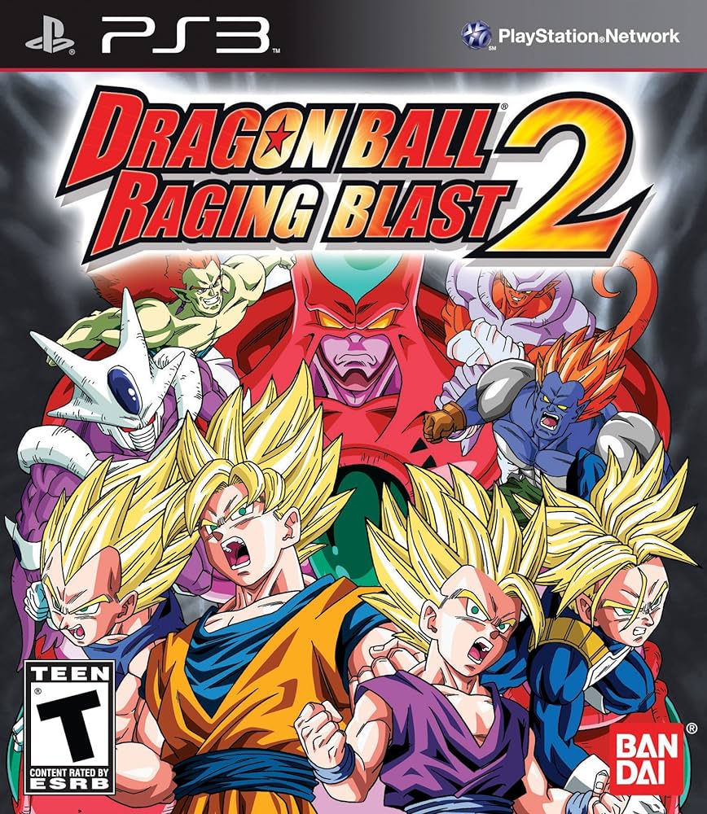
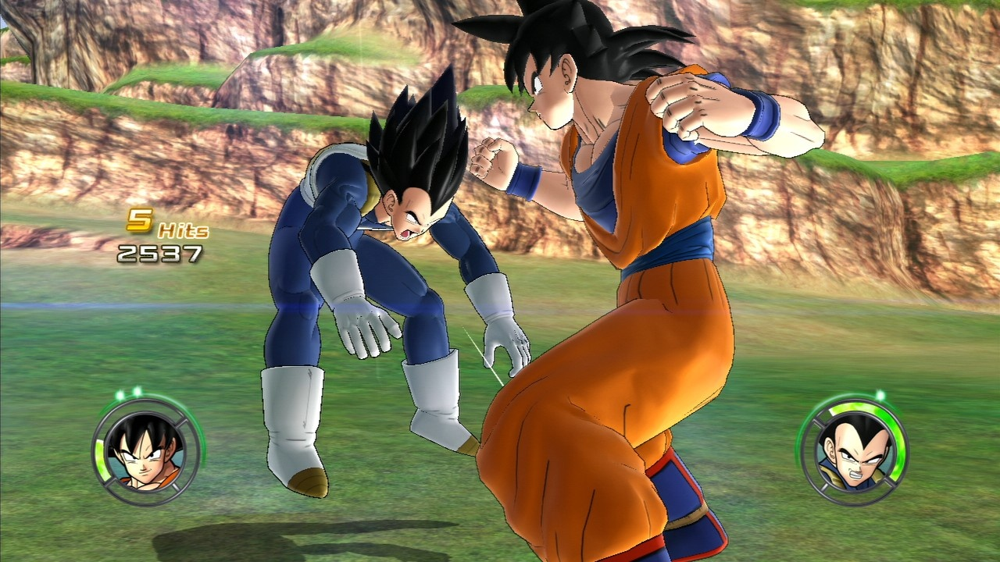

Jogos de luta (Parte 2) - 20/08/2024
Vamos continuar falando sobre jogos de luta, infelizmente não tive tempo de terminar tudo ontem
Se ainda não ficou claro, meu objetivo aqui é falar um pouquinho de (quase) todos os jogos de luta que já joguei, em ordem (quase) cronológica
Mortal Kombat: Armageddon
Ainda na era do PS2, Mortal Kombat Armageddon foi minha introdução à franquia MK - que introdução
O jogo já começava com uma intro sensacional, todo mundo saindo no soco pra chegar no topo da pirâmide.
Extremamente memorável
E o Liu Kang zumbi? Lembro do meu pai falar que era tosqueira, mas eu achava muito legal
Lembro que tinha um modo campanha que eu não era muito chegado - legal mesmo era a porra do MODO KART: Motor Kombat. Absolutamente sensacional
Criei meu próprio personagem, aprendi vários fatalities e me lembro de jogar com muito Sektor
O roster era gigante, na minha opinião um dos melhores jogos de luta do PS2


Mortal Kombat (9)
Chegamos na era do PS3, aqui eu já devia ter uns 11 anos. Com isso, temos uma nova geração de Mortal Kombat
Eu falei que o MK Armageddon era bom? Pois ele é um lixo perto do Mortal Kombat do PS3, também conhecido como MK9
O jogo se chama só "Mortal Kombat" pq é um soft reboot da franquia - já que basicamente TODO mundo morreu no final do Armageddon, e o fodendo Shao Kahn dominou tudo 🫠
Mecanicamente falando, o jogo é sensacional, e basicamente criou um novo padrão pra todos os jogos subsequentes da franquia (pelo menos até o Mortal Kombat 1, o segundo soft reboot de 2023)
O jogo é incrível, com um roster mais curto que o jogo anterior, ele definitivamente prezava mais por qualidade ao invés de quantidade
Me lembro de passar muitas tardes jogando com um amigo meu chamado Enzo. Passei várias noites em claro jogando com ele - e pela primeira vez, eu espancava meu pai num jogo de luta, de forma que ele mal conseguia lutar contra mim 😄
Tá certo que ele mal jogou o jogo, mas lembro dele comentar que é estranho ver seu filho crescer e bater nele em jogo de luta, hahah
O jogo infelizmente não tinha modo kart :( Mas tinha um modo história, que basicamente era o Raiden recebendo uma mensagem do Raiden do futuro, falando que ele tem que impedir o futuro Armageddon, e ele faz isso deixando o Shao Kahn ganhar uma das invasões dele, e sendo fodido pelos deuses (sim, eu infelizmente sei o lore do Mortal Kombat)
Definitivamente joguei muito esse jogo, possivelmente meu jogo de luta mais jogado até então - talvez equiparado com o Budokai Tenkaishi 3. Meu main era o Noob Saibot (adorava os teleportes), mas eu gostava muito do Sub-Zero também
Injustice: Gods Among Us
O que falar sobre Injustice? Eu certamente joguei muito também, algo próximo de 100 horas. Também joguei bastate com meu amigo Enzo
O jogo era produzido pela mesma empresa dos Mortal Kombat, então era mecanicamente MUITO similar ao Mortal Kombat 9, inclusive tinha o Scorpion como personagem convidado
É uma versão mais family friendly dos MK, com nossos favoritos heróis da DC. Sempre achei meio tosco ver o Coringa batendo no Super Homem, mas tudo bem 😄
A minha main era a Mulher Gavião - ou "Mulher Gabiru", como meu padrinho chamava (acho que o narrador falava algo parecido com isso quando selecionava ela)
Também gostava de jogar com Apocalipse, adorava os supers mega exagerados dele (ATRAVESSAR O PLANETA BATENDO NO OPONENTE!!!)
Também tinha um modo história com o Super Homem virando do mal (uau, que original...)
Curiosamente, apesar disso tudo eu não sei dizer se gosto muito do jogo. Ele era legal de jogar justamente por ser igual aos Mortal Kombat. Mas eu não gostava muito da temática, nunca fui muito ligado em super herói, fora que sem a violência do MK não tem tanta graça :p


De qualquer forma, vale a menção aqui. Eu joguei bastante e certamente marcou a era PS3 pra mim
Não posso dizer o mesmo pro Injustice 2, que já era cheio de micro transação. Nunca tive interessantede em jogar
Dragon Ball Raging Blast 2
Tá, originalmente eu nem ia citar esse jogo. Considero ele bem fraquinho, mas ao mesmo tempo eu joguei bastante, então pra seguir sendo fiel a minha proposta, aqui está
Esse jogo não é nada mais que uma versão pior do Budokai Tenkaishi 3, agora com gráficos melhores no PS3
A jogabilidade era bem similar, mas tinha uns personagens estranhos que até hoje eu não sei da onde são (acredito que alguns nem são canon)
Isso foi antes do Super, então eles tavam tirando personagem de qualquer buraco pra tentar incrementar o roster com novas caras. Esse foi o último jogo de luta que joguei com meu amigo Enzo. A gente ficou descente nele até, eu lembro de jogar de Vegetto
Uma memória em especial que tenho com esse jogo, é de uma vez que a gente brigou feio. Aí a gente lutou mais uma vez e eu fui embora da casa dele no meio da tarde, voltei a pé pra casa e minha mãe tava fazendo faxina. Ela perguntou o que aconteceu, mas eu não expliquei
Claro que depois de um (bom tempo) fizemos as pazes, mas aquela última partida me marcou. Acho que nunca mais joguei o jogo depois disso (talvez por isso eu não goste muito dele?)
Tinha um modo endless, que vc ficava sendo atacado pra sempre por inimigos NPC - eu conseguia sobreviver literalmente pra sempre, pq vc recuperava um pouco de vida quando matava um oponente, e eu apanhava tão pouco que isso era suficiente pra ficar jogando eternamente
Isso quer dizer que eu era um Deus? Provavelmente não, só que o jogo era razo pra caramba 😄 E hoje olhando a interface - que jogo feio, meu Jesus. Gráficos melhores que o Budokai 3, mas a direção de arte é horrível


Pronto, vamos esquecer desse jogo agora. Até a capa é feia (QUEM É ESSE CARA ROSA???)
Pelo menos tinha uma opening legalzinha até